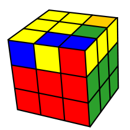
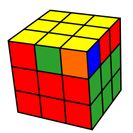

From Wikipedia, the free encyclopedia
The CFOP Method (Cross – F2L – OLL – PLL), sometimes known as the Fridrich method, is one of the most commonly used methods in speedsolving a 3×3×3 Rubik's Cube. This method was first developed in the early 1980s combining innovations by a number of speed cubers. Czech speedcuber Jessica Fridrich is generally credited for popularizing it by publishing it online in 1997.
The method works on a layer-by-layer system, first solving a cross typically on the bottom, continuing to solve the first two layers (F2L), orienting the last layer (OLL), and finally permuting the last layer (PLL).
Basic layer-by-layer methods were among the first to arise during the early 1980s cube craze. David Singmaster published a layer-based solution in 1980 which proposed the use of a cross.
The major innovation of CFOP over beginner methods is its use of F2L, which solves the first two layers simultaneously. This step was not invented by Jessica Fridrich. According to Singmaster's report on the 1982 world championship, Fridrich was then using a basic layer method, while Dutch competitor Guus Razoux Schultz had a primitive F2L system.
The last layer steps OLL and PLL involve first orienting the last layer pieces, then permuting them into their correct positions. This step was proposed by Hans Dockhorn and Anneke Treep.
Fridrich switched to F2L later in 1987. Her main contribution to the method was developing the OLL and PLL algorithms, which together allowed any last layer position to be solved with two algorithms and was significantly faster than previous last layer systems.
Cross solved (view from bottom)
First Two Layers solved
Orientation of the Last Layer complete
CFOP is heavily used and relied upon by many speedcubers, including Rowe Hessler, Mats Valk, and Feliks Zemdegs for its heavy reliance on algorithms, pattern recognition and muscle memory; as opposed to more intuitive methods such as the Roux or Petrus method. The majority of top speed cubers on the WCA ranking list are CFOP solvers.